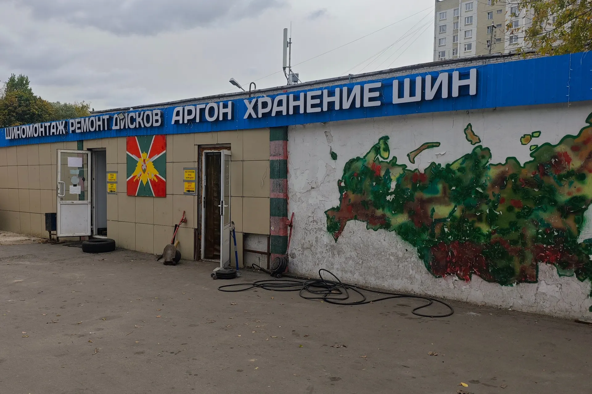
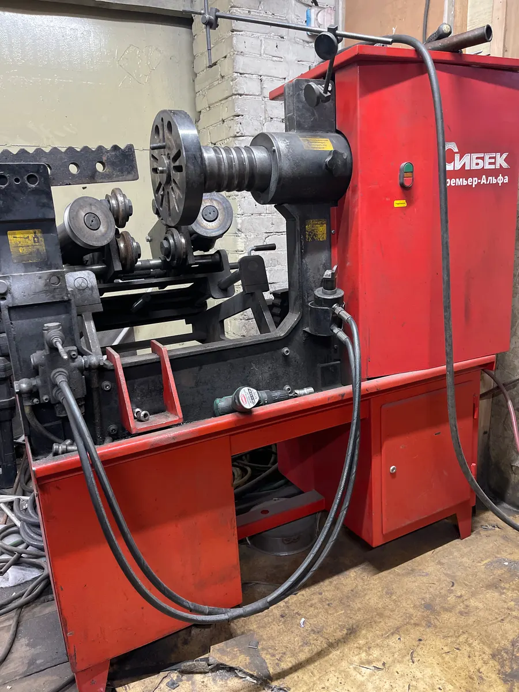
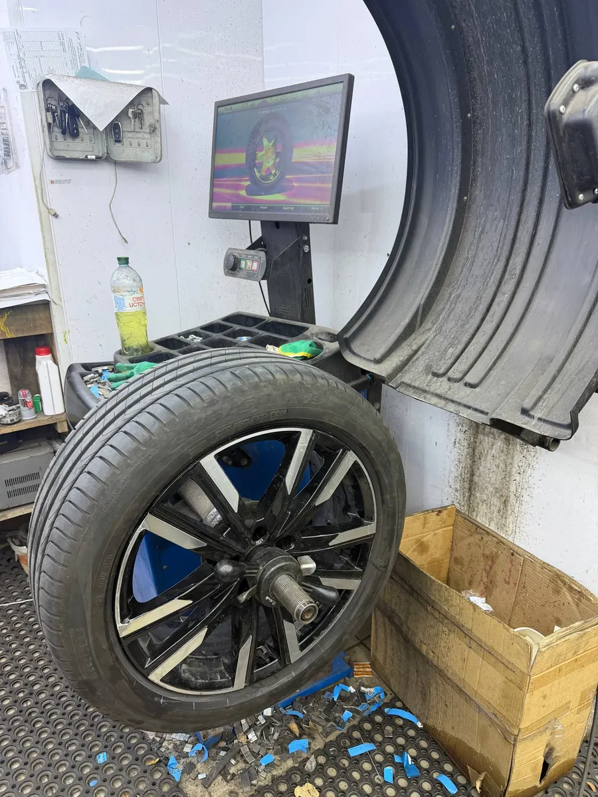
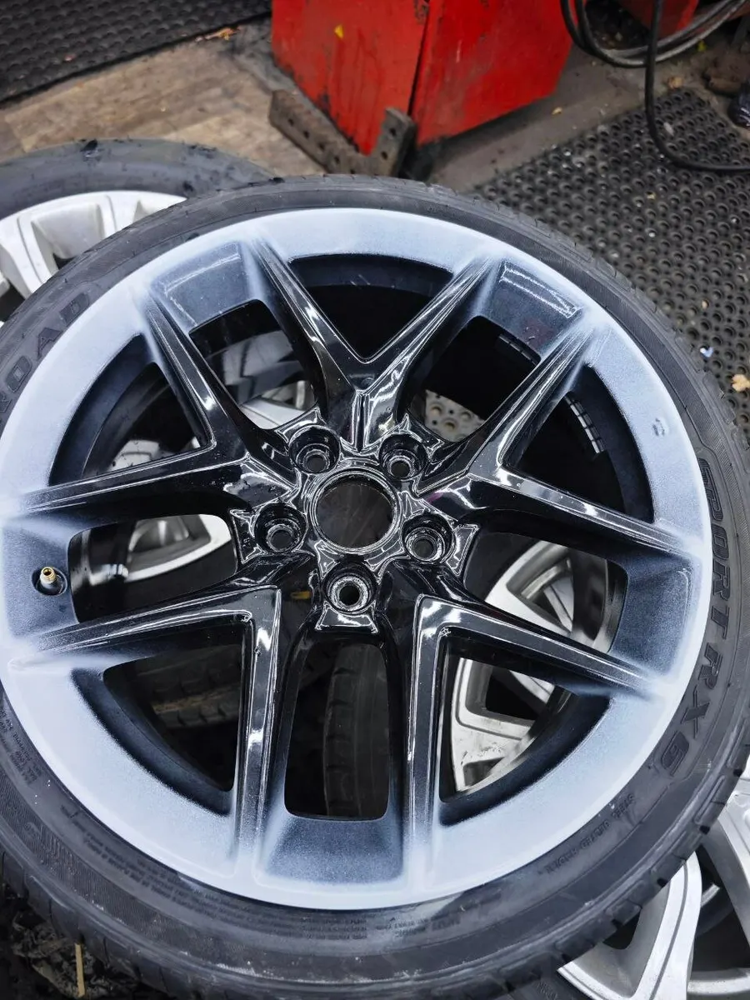

Шиномонтаж · Москва, Кузьминки
Шиномонтаж в Москве – снимем секретки, которые не сняли другие
Кузьминки, улица Академика Скрябина, 36, стр. 4. Правим и варим диски, чиним боковые порезы, переобуваем, храним шины.
- Каждый день с 08:30 до 22:00
- Запись в WhatsApp и по телефону
- Оплата картой, наличными или по СБП

Цены
Цена зависит от радиуса, типа машины и сложности работы. Напишите в WhatsApp – сориентируем по цене до приезда.
Шиномонтаж
- Замена комплекта шинуточнить
- Замена колёс в сбореуточнить
- Шиномонтаж одного колесауточнить
- Выездной шиномонтажуточнить
Ремонт шин и секретки
- Ремонт проколалатка или жгутуточнить
- Ремонт бокового порезакордовая заплатка или вулканизацияуточнить
- Снятие секретокуточнить
Диски
- Правка литых дисковуточнить
- Правка стальных дисковуточнить
- Аргонная сваркауточнить
- Покраска дисковуточнить
- Проточка дисковуточнить
Хранение и кондиционер
- Сезонное хранение шиндо 7 месяцевуточнить
- Хранение колёс в сборедо 7 месяцевуточнить
- Заправка автокондиционерауточнить
Как проходит
- 01
Пишете в WhatsApp или звоните
Рассказываете, что случилось с колесом или диском, и узнаёте цену.
- 02
Приезжаете на площадку
Бежевый павильон с синей вывеской «Шиномонтаж · Ремонт дисков», на стене нарисована карта России.
- 03
Мастер смотрит колесо
Говорит, что можно починить, а что придётся менять.
- 04
Делаем при вас
Подождать можно в комнате с креслами и кофе.



За чем к нам едут
Снять сорванную секретку
В отзывах пишут, что здесь снимают секретки, с которыми не справились в других сервисах.
Починить диск
Правим литые и стальные диски, варим аргоном, красим и протачиваем.
Починить колесо поздно вечером
Работаем каждый день до 22:00.
Отзывы с Яндекс.Карт
«Попал в яму, замял диск и порвало резину. Только тут мастера взялись ремонтировать порез на низком профиле. Сделали очень быстро. Около часа ушло на правку диска и ремонт бокового пореза!»
Дмитрий Марченко · 6 мая 2026
«Спасибо ребята, выручили. Сняли секретки volkswagen 17R за 15 минут со стоковыми литыми дисками Tulsa без всякого высверливания. Другие сервисы не смогли.»
Илья · 8 апреля 2025
«Многие годы пользуемся услугами шиномонтажа, замена и переобувка очень оперативно, отличный ремонт дисков, ребята четкие профессионалы своего дела. Возможно хранение колес по адекватным ценам для Москвы. Непременно рекомендую.»
Анатолий Иванович · 3 апреля 2026
Отзывы с карточки на Яндекс.Картах, без правок.
Частые вопросы
Как вас найти?
Улица Академика Скрябина, 36, стр. 4, район Кузьминки. Бежевый павильон с синей вывеской, на стене нарисована карта России.
Нужно ли записываться?
Принимаем и по записи, и в порядке очереди. Чтобы не ждать, напишите заранее в WhatsApp.
Снимете секретку, если ключ потерян или сорван?
Да, снимаем секретки. Цена зависит от случая – назовём после осмотра.
Ремонтируете боковые порезы?
Да, кордовыми заплатками или горячей вулканизацией.
Можно оставить шины на хранение?
Да, храним шины и колёса в сборе до 7 месяцев.
Запишитесь или приезжайте
- Адрес
- Академика Скрябина, 36, стр. 4, Москва
- Часы
- Каждый день 08:30–22:00
- Телефон
- +7 (926) 836-77-79